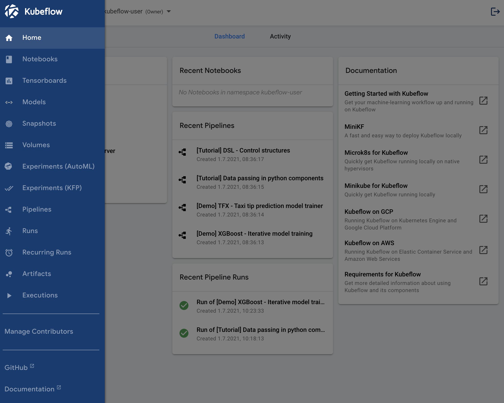

What we cover
In this tutorial we are building Kubeflow Pipelines on a local machine.
Kubeflow Pipelines is a platform for building and deploying portable, scalable machine learning (ML) workflows based on Docker containers. We mainly follow the instructions from this Kubeflow tutorial
To start this tutorial, you need the following environment setup:
- Installation of MiniKF
If you don't have MiniKF installaed on your system, review this Kubeflow installation tutorial.
According to Kubeflow's documentation the Kubeflow Pipelines platform consists of:
- A user interface (UI) for managing and tracking experiments, jobs, and runs.
- An engine for scheduling multi-step ML workflows.
- An SDK for defining and manipulating pipelines and components.
- Notebooks for interacting with the system using the SDK.
The following are the goals of Kubeflow Pipelines:
- End-to-end orchestration: enabling and simplifying the orchestration of machine learning pipelines.
- Easy experimentation: making it easy for you to try numerous ideas and techniques and manage your various trials/experiments.
- Easy re-use: enabling you to re-use components and pipelines to quickly create end-to-end solutions without having to rebuild each time.
- A pipeline is a description of an ML workflow, including all of the components in the workflow and how they combine in the form of a graph.
- The pipeline includes the definition of the inputs (parameters) required to run the pipeline and the inputs and outputs of each component.
- After developing your pipeline, you can upload and share it on the Kubeflow Pipelines UI.
- A pipeline component is a self-contained set of user code, packaged as a Docker image, that performs one step in the pipeline.
- For example, a component can be responsible for data preprocessing, data transformation, model training, and so on.
Kubeflow Pipelines offers a few samples that you can use to try out Kubeflow Pipelines quickly. The steps below show you how to run a basic sample that includes some Python operations, but doesn't include a machine learning (ML) workload:
- Open the Kubeflow menue at the top left and select Pipelines.

- Click the name of the sample, [Tutorial] Data passing in python components, on the pipelines UI.
- On the top right, click Create experiment.
- Provide experiment details:
- Experiment name: My first experiment
- Description: Kubeflow pipeline based on Tutorial Data passing in python components
- Click Next.
- Change the name of the run:
- Run name: My first run
- Click Start.
- Click the name of the run on the experiments dashboard to trigger the pipeline.
- Wait until the pipeline is finished.
- Explore the graph and other aspects of your run by clicking on the components of the graph and the other UI elements.
You can find the source code for the Data passing in python components tutorial in the Kubeflow Pipelines repo.
This section shows you how to run the XGBoost sample available from the pipelines UI. Unlike the basic sample described above, the XGBoost sample does include ML components.
- Open the Kubeflow menue at the top left and select Pipelines.
- Click the name of the sample, [Demo] XGBoost - Iterative model training, on the pipelines UI.
- On the top right, click Create experiment.
- Provide experiment details:
- Experiment name: XGBoost experiment
- Description: XGBoost pipeline
- Click Next.
- Change the name of the run:
- Run name: XGBoost run
- Click Start.
- Click the name of the run on the experiments dashboard to trigger the pipeline.
- Wait until the pipeline is finsihed (the last component is Xgboost predict).
- Explore the graph and other aspects of your run by clicking on the components of the graph and the other UI elements.
You can find the source code in the Kubeflow Pipelines repo.
When you are done, you can exit Kubeflow and stop MiniKF:
- Log out from Kubeflow (click the ⍈ symbol at the top right of the Kubeflow UI)
- Navigate to your MiniKF browser window http://10.10.10.10.
- Click on the terminal (in the middle of the screen).
- Use
Ctrl-Cto exit.
Congratulations! You have completed the tutorial and learned how to:
✅ Run a basic Kubeflow pipeline
✅ Run a ML pipeline with XGBoost
This tutorial showed you how to run some of the examples supplied in the Kubeflow Pipelines UI. Next, you may want to run a pipeline from a notebook, or compile and run a sample from the code. See the guide to experimenting with the Kubeflow Pipelines samples.
Build your own machine-learning pipelines with the Kubeflow Pipelines SDK.

Thank you for participating in this tutorial. If you found any issues along the way I'd appreciate it if you'd raise them by clicking the "Report a mistake" button at the bottom left of this site.
Copyright: Jan Kirenz (2021) | kirenz.com | CC BY-NC 2.0 License